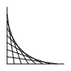
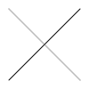

01 / Line fan
A descending repeat loop creates a geometric curve from straight lines.
DBN source · Download SVGA few lines of DBN become standalone SVG. These four drawings demonstrate loops, questions, arithmetic, point sampling, and vector shapes.
Rebuild with npm run demo · Language reference

A descending repeat loop creates a geometric curve from straight lines.
DBN source · Download SVGNested loops position tiles; a question adds circles above the diagonal.
DBN source · Download SVGSix SVG extensions share DBN coordinates and a small color palette.
DBN source · Download SVG
Read a diagonal line's grayscale values and reflect them into a dotted line.
DBN source · Download SVG